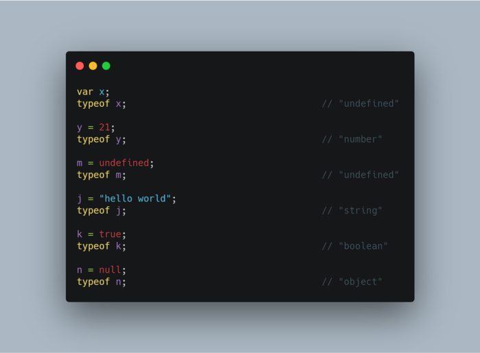
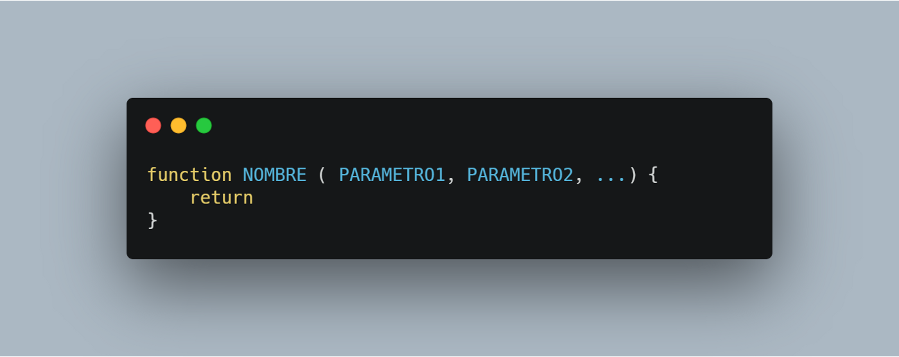
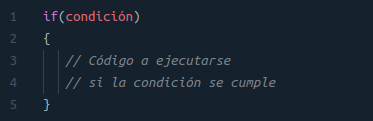
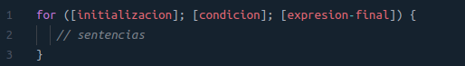
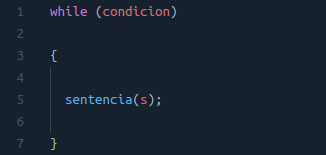

JAVASCRIPT
JavaScript es un lenguaje de programación o de secuencias de comandos que te permite implementar funciones complejas en páginas web, cada vez que una página web hace algo más que sentarse allí y mostrar información estática para que la veas, muestra oportunas actualizaciones de contenido, mapas interactivos, animación de Gráficos 2D/3D, desplazamiento de máquinas reproductoras de vídeo, etc., puedes apostar que probablemente JavaScript está involucrado. Es la tercera capa del pastel de las tecnologías web estándar, dos de las cuales (HTML y CSS).
JavaScript es un lenguaje de programación dinámico que tiene la capacidad de ser utilizado en muchos dispositivos diferentes. Puede usarse en ordenadores personales, servidores web y teléfonos inteligentes. Es un lenguaje interpretado, orientado a objetos, débilmente tipado y dinámico. JavaScript se emplea comúnmente para el desarrollo web front-end y más recientemente para algunos desarrollos back-end a través de frameworks como Node.Js. o Next.Js. Tiene características como la programación orientada a objetos, funciones y herencia basada en prototipos.
¿Por qué decimos que Javascript es un lenguaje dinámico?
Corre directamente en la etapa de Runtime, sin una etapa de compilación previa. Esto permite probar nuestro código inmediatamente; pero también es lo que hace que los errores no se muestren sino hasta que se ejecuta el programa. Lo que se ve a primera vista, cuando se analiza el código, es muy probable que no sea lo que se va a obtener cuando el programa se ejecute.
JavaScript permite declarar (por ejemplo) variables cuyo valor (y tipo) solo se conocerá al momento de su ejecución en función de las condiciones dadas al momento de correrlo en un entorno real. En cambio, los lenguajes estáticos no compilarán en código ejecutable a menos que todos los valores (o tipos de valores) se conozcan por adelantado.
¿Por qué es débilmente tipado?
Porque los tipos de datos no están bien definidos en el lenguaje y permite, por ejemplo, operaciones entre numerosos y letras. Esto sucede porque el lenguaje asume tipos de datos que no necesariamente fueron los que se querían representar. Se pueden hacer operaciones entre tipos distintos de datos (enteros con strings, booleanos con enteros, etc.).
Variables y tipos de datos
Variables
Las variables son uno de los conceptos básicos de la programación y nos permiten almacenar información temporal que podemos usar más adelante en nuestros programas.
Las variables se crean con la palabra clave var seguido del nombre de la variable. Opcionalmente, le puedes asignar un valor a la variable utilizando el caracter igual y el valor que le quieras dar. El punto y coma (;) al final es opcional pero se considera una buena práctica tenerlo.
Las palabras reservadas de JavaScript no se pueden usar como nombres de variables. Como buena práctica se recomienda empezar las variables con una letra en minúscula y, si el nombre se compone de varias palabras, capitalizar cada palabra después de la primera. Por ejemplo firstName. Los nombres de las variables diferencian mayúsculas y minúsculas (p.e. firstname es diferente a firstName).
Tipos de Datos
Existen 7 tipos de datos en Javascript:
○ String: Cadenas de Texto. Es un conjunto de caracteres Unicode(letras,digitos,signos de puntuación y mas),este tipo de dato es el encargado de representar texto en JavaScript.
○ Number: Valores númericos. No se distingue entre los valores enteros y de punto flotante.
○ Boolean: Este tipo de dato almacena 1 bit puede ser true o false son utilizados para registrar un estado (VERDADERO O FALSO).
○ Null: Es un valor asignado tiene el valor de “no valor”.
○ Undefined: Una variable a la que no se le ha asignado ningún valor tiene el valor undefined.
○ Symbol: Nuevo en ECMAScript 2015. Este tipo de datos cuyos valores son únicos y no pueden ser alterados. Dichos valores pueden ser utilizados como identificadores (claves) de las propiedades de los objetos. Cada valor del tipo Symbol tiene asociado un valor del tipo String o Undefined que sirve únicamente como descripción del símbolo. mdn
○ Object: Un valor en memoria al que podemos acceder por un identificador. Dado que JavaScript esta diseñado en un paradigma basado a objetos. Decimos que un objeto es una colección de propiedades, estos objetos se pueden comparar con objetos de la vida real objetos tangibles.
Estos tipos se dividen en dos grupos, Primitivos y de Objeto.
Los valores primitivos son inmutables, no pueden ser cambiados. String, Number, Boolean, null, undefined y Symbol son tipos primitivos.
Un Objeto es un valor en memoria al que podemos acceder por un identificador. En JavaScript los objetos pueden ser vistos como una colección de propiedades.
typeof
JavaScript proporciona un operador llamado typeof este operador que puede examinar un valor y decirle qué tipo es.

Funciones
Las funciones son uno de los fragmentos de código mas usados en Javascript. Una función es un conjunto reutilizable de declaraciones para realizar una tarea especifica. A las funciones se le pueden pasar uno o más valores por parámetros y utilizar estos para devolver un valor al finalizar la ejecución de la misma. Para utilizar una función,debemos primero definirla, para poder definir una función utilizamos la palabra reservada function todas las funciones tienen un aspecto parecido a este:
Tienen un nombre, aunque también pueden ser anónimas y también pueden recibir datos por parámetros.
Parámetros
Las entradas a las funciones se conocen como parámetros, cuando una función se declara o se define podemos brindarle valores por parámetros estos valores serán como variables dentro del cuerpo de la función. Cuando se llama a esta función, estos parámetros tendrán el valor de lo que se pase como argumentos. Aunque también podemos definir funciones sin ningún tipo de parámetro.
Return
Las funciones devuelven un resultado, este resultado es retornado o devuelto por una palabra reservada llamada return . Esta palabra finaliza la ejecución de la función y retorna un valor, un dato a tener en cuenta es que si olvidamos la palabra return la función nos arrojara un undefined por defecto.
Funciones de flecha
Las Arrow Functions o Funciones de flecha, estas funciones son limpias y concisas. Para declarar una Arrow Function no necesitamos de la palabra function si no que utilizamos una flecha => para separar los parámetros del cuerpo.
Otra característica a tener en cuenta es que, si solo tenemos un solo parámetro no necesitamos utilizar () al rededor de las listas de parámetros. Y si solo tiene una expresión nos podemos olvidar de la palabra return y todo va a funcionar bien!

Condicionales IF
La toma de decisiones en programación es similar a la toma de decisiones en la vida real. En programación también enfrentamos algunas situaciones en las que queremos que se ejecute un cierto bloque de código cuando se cumple alguna condición.
Los lenguajes de programación utilizan instrucciones condicionales para controlar el flujo de ejecución del programa en función de ciertas condiciones. Estos se utilizan para hacer que el flujo de ejecución avance y se ramifique en función de los cambios en el estado de un programa.
Declaraciones condicionales de Javascript:
○ if: Esta declaración es la condición más simple para tomar decisiones. Funciona de la siguiente manera, primero se evalúa una expresión, si da resultado positivo se realizan las acciones relacionadas con el caso positivo.

○ if-else: La sentencia if sola nos dice que si una condición es verdadera ejecutará un bloque de declaraciones o sentencias JavaScript y si la condición es falsa no lo hará. Pero qué pasa si queremos hacer algo más si la condición es falsa. Aquí viene la otra declaración. Podemos usar la instrucción else con la instrucción if para ejecutar un bloque de código cuando la condición es falsa.

○ if anidado: Un if anidado es una sentencia if que esta dentro de otro if o else. Anidado significa una sentencia if dentro de una sentencia if.

○ else if: En general, es preferible no tener que anidar condicionales porque son difíciles de leer y entender. Otro atajo que nos ofrece JavaScript para los condicionales es el else if, que significa "De lo contrario, si ..." en Inglés.

○ Operador IF: Hay un operador que no hemos visto todavía y es una forma más esquemática de realizar algunos IF sencillos. Proviene del lenguaje C, donde se escriben muy pocas líneas de código y donde cuanto menos escribamos más elegantes seremos. Este operador es un claro ejemplo de ahorro de líneas y caracteres al escribir los scripts.

Este ejemplo no sólo realiza una comparación de valores, además asigna un valor a una variable. Lo que hace es evaluar la condición (colocada entre paréntesis) y si es positiva asigna el valor1 a la variable y en caso contrario le asigna el valor2.
Ciclos
Los ciclos nos permiten repetir la ejecución de un código varias veces.
Los tres tipos más comunes de bucles son:
○ for: Consiste de tres expresiones y una declaración.
- Inicialización: Sucede antes de la primera ejecución del bucle. Esta expresión es comúnmente utilizada para crear contadores. Las variables creadas tienen un alcance limitado al cuerpo del bucle. Una vez que el bucle ha terminado su ejecución las variables son destruidas.
- Condición: Expresión que es evaluada antes de la ejecución de cada iteración. Si se omite, esta expresión es evaluada como verdadera. Si devuelve true, la sentencia del cuerpo del bucle se ejecuta. Si devuelve false , el bucle se detiene.
- Expresión Final: Expresión que se ejecuta luego de cada iteración. Usualmente es utilizada para incrementar un contador. Pero también puede ser utilizada para decrementar el contador.
- Sentencia o Declaración:Código que será ejecutado repetidamente por el bucle.
Cualquiera de estas tres expresiones o la sentencia del cuerpo del bucle pueden ser omitidas. Los bucles For son comúnmente utilizados para contar un cierto número de iteraciones para repetir una sentencia. Puedes utilizar una sentencia break para salir del bucle antes que la expresión de condición devuelva false.
○ while: El bucle while empieza por evaluar la condición. Si la condición devuelve true, entonces las sentencias son ejecutadas. Si la condición devuelve false , entonces las sentencias no son ejecutadas. Luego el bucle finaliza.
- Sentencia(s):Una sentencia es código que se ejecuta si la condición devuelve verdadero ( true ).
- Condición: Es una expresión booleana (Boolean) que es evaluada antes de cada paso (iteración) por el bucle. Si esta condición evalúa a verdadero ( true ), las sentencias son ejecutadas. Cuando la condición evalúa a falso ( false ), la ejecución continúa con la siguiente sentencia luego del bucle while.

○ do while: El bucle do...while está cercanamente relacionado al bucle while . En el bucle do...while , la condición se evalúa al final.
Los bucles Do...While aseguran que el código se ejecute por lo menos una vez, y luego de esta primera ejecución, si la condición dentro del while() es true, continúa con el bucle, de otra forma, se detiene.

JSON
JSON son las iniciales de JavaScript Object Notation el cual es un formato que guarda objetos de javascript muy ligeros y fáciles de interpretar, lo cual hace que sea mas aceptado que xml y soportado por otros lenguajes de programación como python, C/C++, entre otras. Podemos encontrar archivos json en APIs como la de youtube o la de instagram las cuales son mucho más fáciles de leer que un archivo de xml y más cuando de javascript se trata.
Muchos lenguajes de programación proporcionan métodos para analizar una cadena de texto con este formato en un objeto nativo y viceversa.
Según la descripción de Stack Overflow, JSON “define seis tipos de valores: nulo, números, cadenas, booleanos, matrices y objetos”.
Pese a su nombre, no es necesariamente parte de JavaScript, de hecho, es un estándar basado en texto plano para el intercambio de datos, por lo que se usa en muchos sistemas que requieren mostrar o enviar información para ser interpretada por otros sistemas.
Una de las características de JSON, al ser un formato que es independiente de cualquier lenguaje de programación, es que los servicios que comparten información por este método no necesitan hablar el mismo idioma, es decir, el emisor puede ser Java y el receptor Python, pues cada uno tiene su propia librería para codificar y decodificar cadenas en este formato.
Características de JSON:
○ JSON es solo un formato de datos.
○ Requiere usar comillas dobles para las cadenas y los nombres de propiedades. Las comillas simples no son válidas.
○ Una coma o dos puntos mal ubicados pueden producir que un archivo JSON no funcione.
○ Puede tomar la forma de cualquier tipo de datos que sea válido para ser incluido en un JSON, no solo arreglos u objetos. Así, por ejemplo, una cadena o un número único podrían ser objetos JSON válidos.
○ A diferencia del código JavaScript, en el que las propiedades del objeto pueden no estar entre comillas, en JSON solo las cadenas entre comillas pueden ser utilizadas como propiedades.